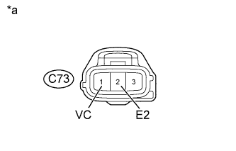

DTC P0122 Низкий уровень сигнала на входе цепи датчика положения педали/дроссельной заслонки "A" |
DTC P0123 Высокий уровень сигнала на входе цепи датчика положения педали/дроссельной заслонки "A" |
| Режим поездки при обнаружении DTC | Условие обнаружения DTC | Неисправный участок |
| Зажигание включено (IG) в течение 3 с | Выходное напряжение (на контакте VLU) датчика положения дроссельной заслонки составляет менее 0,2 В в течение 3 с (логика диагностирования за 1 поездку). |
|
| Режим поездки при обнаружении DTC | Условие обнаружения DTC | Неисправный участок |
| Зажигание включено (IG) в течение 3 с | Выходное напряжение (на контакте VLU) датчика положения дроссельной заслонки составляет более 4,8 В в течение 3 с (логика диагностирования за 1 поездку). |
|
| 1.ПРОВЕРЬТЕ ЖГУТ ПРОВОДОВ И РАЗЪЕМ (ДАТЧИК ПОЛОЖЕНИЯ ДРОССЕЛЬНОЙ ЗАСЛОНКИ – ECM) |
Отсоедините разъем датчика положения дроссельной заслонки.
Отсоедините разъем ЭБУ.
Измерьте сопротивление в соответствии со значениями, приведенными в таблице ниже.
| Контакты для подключения диагностического прибора | Условие | Заданные условия |
| C73-1 (VC) - C91-8 (VCVL) | Всегда | Менее 1 Ом |
| C73-3 (VTA) - C91-3 (VLU) | Всегда | Менее 1 Ом |
| C73-2 (E2) - C91-9 (EVLU) | Всегда | Менее 1 Ом |
| Контакты для подключения диагностического прибора | Условие | Заданные условия |
| C73-1 (VC) или C91-8 (VCVL) - масса | Всегда | 10 кОм или более |
| C73-3 (VTA) или C91-3 (VLU) - масса | Всегда | 10 кОм или более |
| C73-2 (E2) или C91-9 (EVLU) - масса | Всегда | 10 кОм или более |
Подсоедините разъем датчика положения дроссельной заслонки.
Подсоедините разъем ECM.
|
| ||||
| OK | |
| 2.ПРОВЕРЬТЕ НАПРЯЖЕНИЕ НА КОНТАКТАХ ЕСМ (КОНТАКТ VC) |
|  |
Отсоедините разъем датчика положения дроссельной заслонки.
Измерьте напряжение в соответствии со значениями, приведенными в таблице.
| Контакты для подключения диагностического прибора | Положение переключателя | Заданные условия |
| C73-1 (VC) - C73-2 (E2) | Зажигание включено (IG) | 4,5 - 5,5 В |
| *a | Вид спереди разъема со стороны жгута проводов: (к датчику положения дроссельной заслонки) |
Подсоедините разъем датчика положения дроссельной заслонки.
|
| ||||
| OK | |
| 3.ЗАМЕНИТЕ КОРПУС ДРОССЕЛЬНОЙ ЗАСЛОНКИ ДИЗЕЛЬНОГО ДВИГАТЕЛЯ В СБОРЕ |
Замените корпус дроссельной заслонки дизельного двигателя в сборе (для ряда 1 или ряда 2) (Нажмите здесь).
| ДАЛЕЕ | |
| 4.СНИМИТЕ ПОКАЗАНИЯ ПОРТАТИВНОГО ДИАГНОСТИЧЕСКОГО ПРИБОРА |
Подсоедините портативный диагностический прибор к DLC3.
Включите зажигание (IG) и портативный диагностический прибор.
Удалите коды DTC (Нажмите здесь).
Войдите в следующие меню: Powertrain / Engine / Data List / Actual Throttle position или Actual Throttle position #2.
Проверьте движение дроссельной заслонки при работе двигателя на холостом ходу после запуска при включенном зажигании (IG).
| Условие | Информация на дисплее прибора |
| Зажигание включено (IG) | -5 - 5% |
| Холостой ход | 0 - 90% |
|
| ||||
|
| ||||
| 5.ЗАМЕНИТЕ ECM |
Замените ECM (Нажмите здесь).
|
| ||||
| 6.ОТРЕМОНТИРУЙТЕ ИЛИ ЗАМЕНИТЕ ЖГУТ ПРОВОДОВ ИЛИ РАЗЪЕМ |
Отремонтируйте или замените жгут проводов или разъем.
| ДАЛЕЕ | |
| 7.ПРОВЕРЬТЕ, УСТРАНЕНА ЛИ ДОЛЖНЫМ ОБРАЗОМ НЕИСПРАВНОСТЬ |
Подсоедините портативный диагностический прибор к DLC3.
Удалите коды DTC (Нажмите здесь).
Выключите зажигание.
Включите зажигание (IG) на 3 с.
Войдите в следующие меню: Powertrain / Engine / DTC.
Убедитесь, что DTC не выводится снова.
| ДАЛЕЕ | ||
| ||